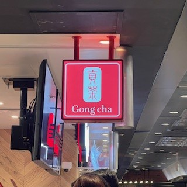
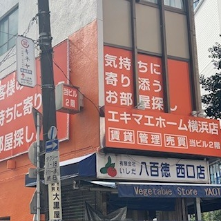
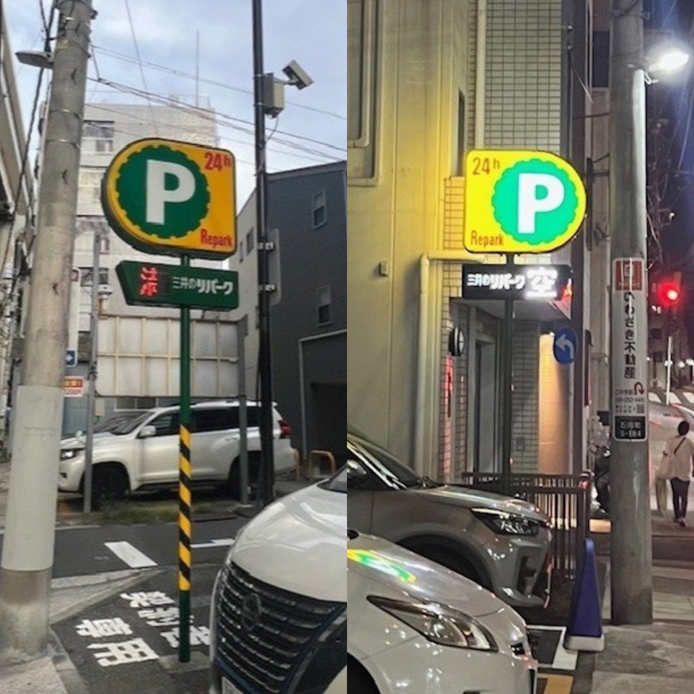

路上観察

ゴンチャ(Gong cha)
＜説明＞
日本国内に約195店舗を展開する、台湾発の人気タピオカティー専門店。
赤を基調としており、白文字のゴンチャのロゴが目立つデザインとなっている。
＜感想＞
蛍光灯が使用されていることで、看板の鮮やかな赤とシンプルなデザインがより際立つ。
明るく清涼感のある空間であると感じ取れる。

エキマエホーム横浜店
＜説明＞
横浜駅西口徒歩３分の賃貸仲介専門店。
ビルの２階部分にオレンジと白のシンプルな看板が複数設置されており、店名以外にキャッチコピーが並んでいる。
＜感想＞
オレンジの鮮やかさとシンプルなデザインが自然と目を惹く。
承っている仕事内容やお店の階数、キャッチコピーなどの情報が一目でわかり効率的である。

三井のリパーク
＜説明＞
三井不動産リアリティが運営する全国展開のコインパーキング。
黄色と緑の背景に24時間の表記とPマークを施したシンプルな看板で設置されている。
＜感想＞
看板が高い位置にあり、大きくPのマークが表記されているため、遠くからでも見つけやすい。
明るく光るデザインであるため、夜間でも簡単に見つけることができる。
振り返り
今回の路上観察を通して、通学路やよく通る道にあるあらゆるものを観察することにより、普段は風景の一環としてなんとなく視界に入っているものが多くあることに気づいた。
また、外出して実際に観察することで、写真や情報だけでは伝わらない現地の印象や雰囲気を感じることができた。